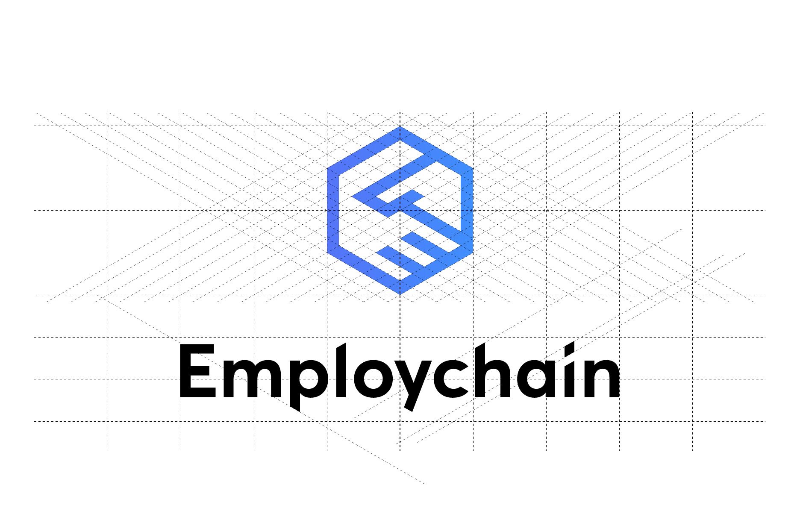

Employchain is an app leveraging blockchain technologies to make the hiring process more streamlined.
Employchain combines two elements: A handshake symbolizing an agreement, a hiring contract and the "Block" element of the word "BlockChain"
Primary colors consists of a an analogous color strategy. Blue colors reminds of a corporate environment, conveys a feeling a seriousness and a color of choice for any digital platform. A blue gradient gives the feeling of a digital screen